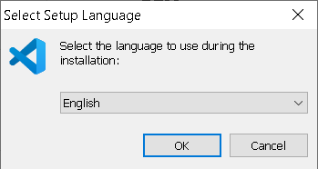
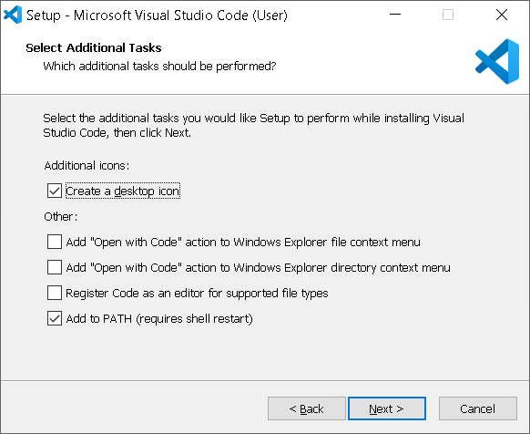
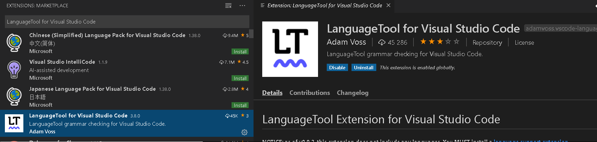
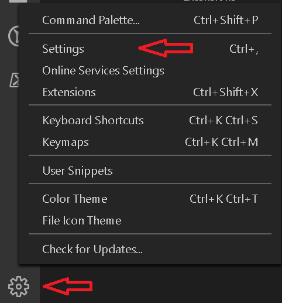
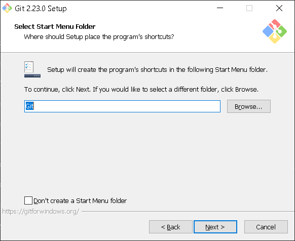
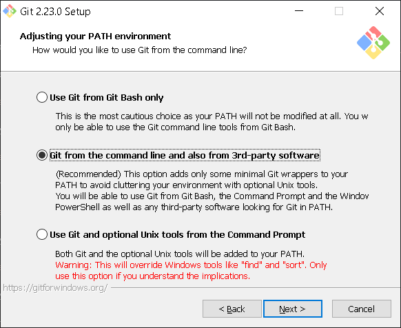
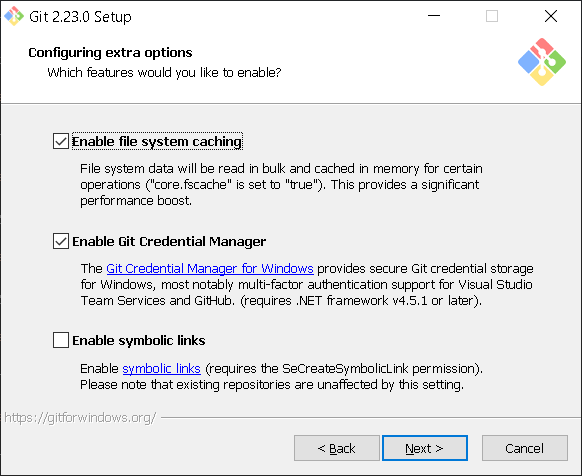
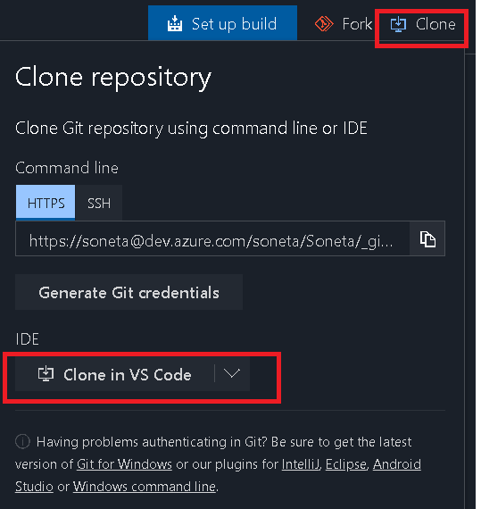
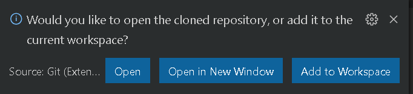
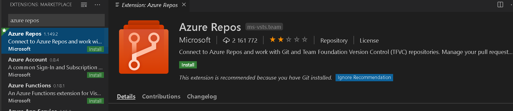

VS Code Instalacja i konfiguracja
Opis narzędzia
Visual Studio Code jest zaawansowanym i przyjaznym użytkownikowi edytorem plików tekstowych, który dzięki bogatemu zestawowi rozszerzeń potrafi zaspokoić potrzeby praktycznie każdego użytkownika.
Co znajdziesz w tym dokumencie
Instalacja VS Code
W przeglądarce przechodzimy do strony i wybieramy User Instaler x64 Dla Windows

Uruchamiamy instaltor i zostawiamy język Angielski

Akceptujemy licencję

Wybieramy folder instalacji

Wybieramy nazwę w Menu Start

Wybieramy dodatkowe parametry

Przeprowadzamy instalcje

Gotowe - uruchamiamy VS Code w celu dalszej konfiguracji
Instalacja dodatku sprawdzania języka polskiego
Aby przejść do zarządzania rozszerzeniami używamy sktóru ctrl+shift+x albo klikamy na lewym pasu ikonę
Wpiszujamy wyraz polish i w znalezionym rozszerzeniu Polish Support for LenguageTool klikamy VSCInstallStep1

Musimy jeszcze zainstalować (może już być zainstalowany) dodatek LanguageTool for Visual Studio Code więc wpisujemy jego nazwę do wyszukiwania

Przechodzimy do ustawień za pomocą skrótu ctrl+, bądź korzystająć z ikony zarządzania na lewym pasu i wybierając opcje Settings

W wyszukiwaniu wpisujemy languageTool Ustawiamy język na pl - gotowe.

Jeżeli na komputrzenie nie ma zainstalowanej Java (min wersja 8.0) należy doinstalować -> Instaltor
Instalacja Git for Windows
Instalujemy na komputerze Git for Windows
Akceptujemy licencje

Wybieramy katalog instalacji

Zostawiamy domyślnie zaznaczone opcje

Wybieramy folder w menu start

Wybieramy VS Code jako domyślny edytor dla Git

Zostawiamy domyślną opcje używania git w lini poleceń

Zostawiamy domyślną opcje dla protokołu HTTPS

Zostawiamy domyślną opcje konwersji końca lini

Ustawiamy linie poleceń widnows

Dodatkowe opcje zostawiamy domyślne

Nie włączamy eksperymentalnych opcji i instalujemy i gotowe.
Podłączenie do repozytorium dokumentacji git
Przechodzimy w przeglądarce do witryny
Używamy przycisku Colne w prawej sekcji witryny i klikamy przycisk Clone in VS Code

Potwierdzamy otwarcie VS Code
Zezwalamy na otwarcie url

Wyniremalu folder trzymania repozytorium np. D:\repos\dokumentacja i klikamy przycisk select reposytory lokalization
Nastąpi krótkotrwały proces klonowania repozytorium po jego zakończeniu wybieramy opcję Open

Gotowe - możemy pracować na repozytorium
Uruchamiamy VS Code i z Menu Terminal uruchamiamy NewTerminal można zastosować sktót ctrl+shift+`

Połączenie i Praca z Azure DevOps
Instalujemy rozszerzenie Azure Repos
